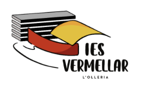
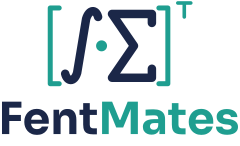
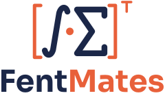

Sis maneres de posar el logo definitiu a la part de dalt de les fitxes i els apunts. Cada maqueta és la part de dalt d’un full A4 a escala, amb la lletra de les fitxes (Fira Sans) i els logos de la Generalitat i de l’institut. Els fitxers del logo són a _eines/logo/.
Els mateixos fitxers en cada combinació: clar (blau i groc), coral i turquesa (els accents que ja fan servir les fitxes), blau (una sola tinta, per fotocopiar), fosc i blanc (per a fons blau).
La capçalera d’ara, però amb FentMates al centre damunt del títol. La més continuista: el logo entra sense desplaçar res.

Una franja blava a sang amb el logo en blanc i groc. Té molta presència i fa que totes les fitxes es reconeguen d’un colp d’ull. Els logos institucionals baixen a la línia del nom.
Una pestanya amb el curs i les barres de secció del mateix color. Els alumnes reconeixen el seu curs pel color, i el logo agafa el mateix color. Els logos institucionals passen al peu de la primera pàgina.


El lila i l’or són nous: els he triat perquè es distingisquen bé dels altres tres i es vegen bé en blanc i negre.
Només el símbol, un títol gran alineat a l’esquerra i una ratlla groga. Els logos institucionals, en gris i més petits. Neta i editorial, amb molt d’aire.
El títol va entre els claudàtors grocs del logo, amb la T de transposada: la capçalera mateixa és part de la marca.
Per als apunts interactius i les pàgines de la web: fons blau, el logo en versió fosca i el símbol gran i transparent de fons.
Múltiples i divisors, criteris de divisibilitat, nombres primers, mcm i MCD.

svg/ | Per a la web i els apunts HTML. |
pdf/ | Per a LaTeX: \includegraphics[height=1cm]{../../logo/pdf/horitzontal-clar.pdf} des de _eines/fonts-latex/<unitat>/. |
png/ | Per a Word, Google Docs o presentacions (fons transparent). |
| Noms | marca, horitzontal, vertical i web (amb fentmates.org), cadascun en clar, coral, turquesa, blau, fosc i blanc. |
| Generador | python3 _eines/logo/genera.py: torna a fer tots els fitxers. El nom està convertit en traços, així que es veu igual sense tenir la lletra Sora instal·lada. |